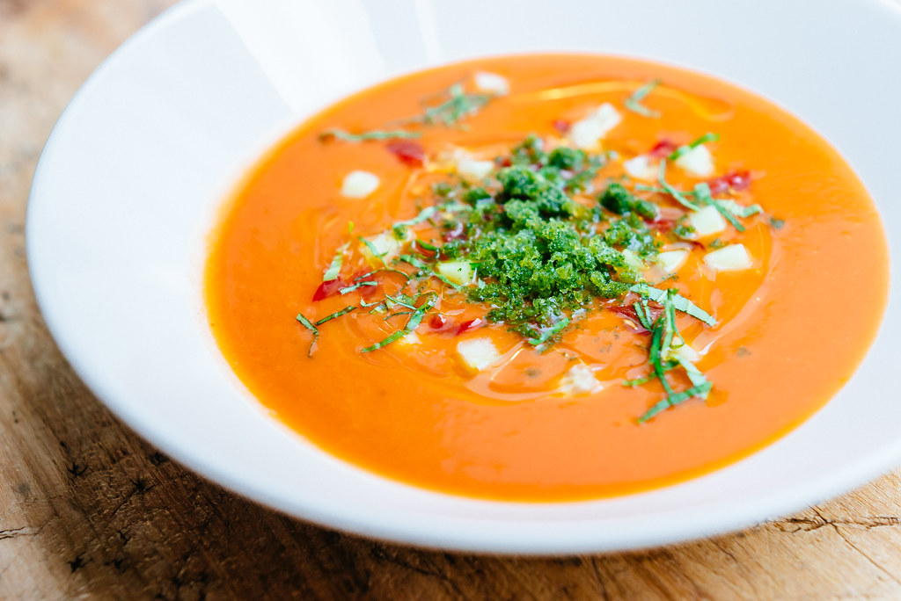

Sweet Corn Gazpacho

This sweet corn gazpacho is a no-cook, chilled sweet corn soup perfect for hot summer days. Its texture is silky and creamy using fresh, peak-season summer produce.
Ingredients
- 3 ears fresh corn
- 1 yellow bell pepper, seeded and roughly chopped
- 1 cup roughly chopped, peeled English cucumber
- 1/4 cup roughly chopped sweet onion
- 1/4 cup extra virgin olive oil, plus more for drizzling
- 2 tablespoons rice vinegar
- 2 tablespoons freshly-squeezed lime juice
- 2 cloves garlic, peeled and smashed or pressed
- salt and freshly ground black pepper to taste
- fresh basil for garnish
Steps
- Slice the corn kernels off the cob; reserve 1/3 cup for garnish.
- Place corn, tomato, yellow bell pepper, cucumber, onion, olive oil, vinegar, lime juice, and garlic in a high speed blender, and process just until smooth, but not totally pureed. Season to taste with salt and pepper.
- Transfer the mixture to an airtight container, and chill in the refrigerator for at least 2 hours. Garnish with basil, a sprinkle of reserved corn kernels, a drizzle of olive oil, and serve.
Home